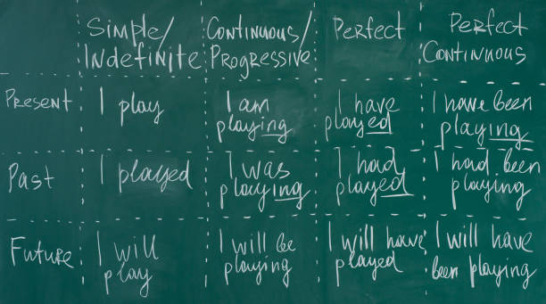

Grammar
Zadie Smith a grammarian said, “The past is always tense, the future perfect.” In English as in every language, we conjugate in tenses which means time. There are three main simple tenses in English. These are simple past and progressive, simple present and progressive, and future. See! simple to understand. We need to think about our own life experiences and visualize what happened before now, what is happening right now, and what will happen later. Now, we will call them verb tenses. When you got this picture in your mind, you are ready to start learning the verb tenses.
Simple Past and Porgressive tense

At one particular time in the past, this happened. It began and ended in the past. Most simple past add -ed. Some verbs have irregular past tense forms. The simple past forms of be are was and were. The past progressive tense indicates that two actions occurred at the same time, but one action began earlier and was in progress when the other action occurred.
Simple Present and Porgressive
The simple present says that something was true in the past, is true in the present, and will be true in the future. It expresses general statements of fact and general truths. The simple present is used to express habitual or everyday activities. The present progressive expresses an activity that is in progress at the moment of speaking. The present progressive is a temporary activity that began in the past, is continuing at present, and will probably end at some point in the future.
Future Will and Be Going to
Will and be going to
Will and be going to expresses future time and often have essentially the same meaning. Will typically expresses predictions about the future. Will is often contracted with pronouns in both speaking and informal writing: I'll, you'll, she'll, he'll, it'll, we'll, they'll. Be going to also commonly expresses predictions about the future. In informal speech, going to is often pronounced "gonna".